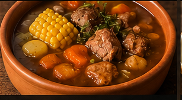

Estofado de Cordero
Ingredientes
- 1 kg de carne para estofar
- 2 cebollas
- 1 morrón rojo
- 3 dientes de ajo
- 4 papas
- 2 zanahorias
- 1 batata
- 500 g de tomate triturado
- 1 vaso de vino tinto
- Caldo
- Pimentón
- Ají molido
- Laurel
- Sal y pimienta
Tiempo aproximado :
- Preparación: 20 minutos
- Cocción: entre 1 hora y media y 2 horas
Preparación
Bueno, mis amores, hoy vamos a hacer un estofado criollo de esos que
abrazan el alma. De esos platos que hacen que toda la casa huela a
domingo, a familia, a pan calentito mojado en la salsa. No hay apuro
acá. El estofado necesita tiempo, porque el sabor se construye
despacito.Si lo apuras te queda mas seco que cucharada de maicena.
Primero agarramos una olla grande, grandota, porque esto no se hace
en chiquito. Un buen chorro de aceite y arrancamos con cebolla,
morrón y ajo. Mucha cebolla, no tengan miedo. Cuando empieza ese
perfume dulzón y el morrón se pone blandito… ahí ya sabés que vamos
bien.
Después entra la carne. Puede ser roast beef, aguja, paleta… cortes
con garra!, porque el estofado necesita fuerza y paciencia. Sellamos
bien, nada de hervirla blanca y triste. Queremos colorcito, queremos
fondo de sabor.
Ahí viene el truco criollo: pimentón, ají molido, laurel y un
poquito de comino si te gusta más profundo. El pimentón no se quema,
¿eh? Apenas unos segundos porque si no amarga y te arruina todo el
trabajo.
Le ponemos tomate triturado y un vasito de vino tinto. Y acá pasa
magia. El alcohol se evapora y queda ese gustito redondo, calentito.
Después caldo hasta cubrir y fuego bajito. Bajito de verdad. El
estofado no se apura.
Mientras tanto cortamos papas, zanahorias y batatas en cubos
grandes. Si las hacés muy chicas desaparecen y terminás con puré
accidental. Y eso no es estofado: eso es un accidente geológico
culinario.
Cuando la carne ya está tierna —de esa que casi se corta sola—
agregamos las verduras. Algunas personas ponen arvejas al final,
otras choclo. Hay discusiones familiares enteras por esto. ¡Si!, En
Argentina discutimos fútbol, política y tambien sobre el estofado.
Después lo dejás cocinar hasta que la salsa espese sola. Nada de
maicena, consejo si podés evitalo. El sabor bueno viene de la
reducción lenta. Y listo! a la mesa
Ah, me olvidaba lo mas importante! :El pancito!. Mucho pancito.
Porque si alguien no limpia el plato con pan, el estofado va ser
cualquier cosa menos estofado.No, metira comelo como quieras, pero
por favor no comas galletas de arroz, le juego al que quiera que
esas galletas suplen al poliuretano expandido

Carbonada Criolla
Plato especial para el invierno, directo desde la Patagonia Argentina.

Humitas del NOA
las mejores humitas dependen de la mejor receta

Mejillones
Plato especial para entradas de eventos, directo desde la Patagonia Argentina.